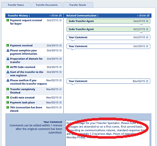
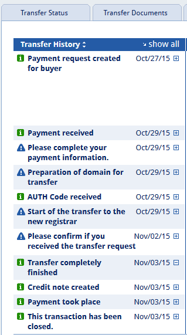
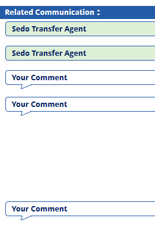

Sedoでドメインを売却する際の手順
１年ほど以前、Sedoでドメインを出品したまま放置していたのですが、先日ようやく１個売れたようです。
確か、30個ほど出品していたのですが、sedoでの出品方法についてはこちらの記事をご参照ください。
→ Sedoでドメインは売れるのか？
出品後、実際にドメインが落札された際のエスクローの流れですが、以下のようになってます。

下の赤丸で囲んだ箇所でコメントしながら、ドメインの引き渡しになりますが、簡単な英語のやり取りで大丈夫でした。「hello」とか、「thank you」とかを織り交ぜながら、フレンドリーに対応していくとよいでしょう。
左側のsedo側の流れはこのようになってます。

「買い手への請求書の作成 → 買い手による入金 → 自分の受け取り方法の作成 → ドメイン移管の準備 → AUTHコードの入力 → 移管手続きの開始 → レジストラへの移管承認 → 移管完了 → 売り手への売却代金の支払い」
この間、作業が完了したりした時点で英語で報告するわけですが、売り手側のコメントは３回ぐらいで済みました。

内容は最初にまだドメインの保有者であるかの確認とか、支払い方法を作成したら報告するとか、レジストラからの移管承認メールに対応したら報告するとか、そんな感じです。１～２行程度のコメントを英語で「Hello,I am still domain owner.」とか、そんな感じでいいと思います。
受け取り方法については、私はpaypalを利用しています。銀行への振込みとかはかなり面倒くさそうなので、paypalがおすすめです。
「AUTHコード」については、専用の入力箇所（ポップアップ窓）がありますので、コメント欄へは直接入力しないことをおすすめします。
買い手とのやり取りは一切なく、Sedo側とのやり取りのみです。手順としては、落札後、sedoが買い手からの代金を預かり、ドメインの移管完了が確認されたら売り手へ引き渡すという流れです。キャプ画に日付がありますが、落札から実際の入金まで１週間もかからなかったかと思います。
買い手が中国の方だったのですが、ドメインについても爆買い現象が生じているのかもしれません。ただ、中国のレジストラへの移管承認が一番難しかったです。「移管承認」のボタンをクリックするだけなのですが、ロシア語や中国語の場合、なんて書いてるのかさっぱりわかりません。
「移管の拒否」を承認するのか、それとも「移管」を承認するのかでまったく違いますので、グーグル翻訳を駆使しながら、対応されることをおすすめします。
sedoの手数料は高く、「60ドル」でしたので、最低でも数万円単位で売却することをおすすめします。最近は円安になってきていますので、以前の１ドル80円の時と比べると売りやすくなってきたのかもしれません。